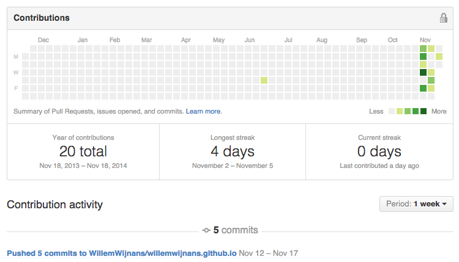

I changed to a Ghost blog
So last weeks I have been transferring my Wordpress site to a Ghost blog. I felt that it was time to have some more freedom and I recently saw some breathtaking Ghost blogs pass by. Simple, elegant and clean will be the motto for 2015 I guess.
What makes it great?
So there are a couple of things that make Ghost much better than Wordpress. I will try to outline why this works for me.
I can blog when I am offline
So since I have been on the road quite a lot and I really like to write about stuff when I am offline and want to kill time. Read: while in airplane or at my current apartment (yup I have no internet in Atlanta). Just run a local instance of ghost by installing Node (and have some fun in the terminal as well), I get to live edit and see changes while offline and push it to Github pages when done. It's friggin easy.
I run it on github pages
Github gives you the opportunity to hosts your own private site. Its quite easy to set up, but Github only hosts static pages and Ghost is not a static page. You need to use Buster to get this to work. It's really easy and very well explained here. Also it gives my Github page some street cred (finally). Also the CDN of github pages is so much faster.

Its not as cloggy as Wordpress
I hated the clunckyness of Wordpress, so much things to choose from and I did really only use 2% of it. Big overkill in my opinion. With Ghost I get the idea that I am using 110% of it's features and that feels good.
Looks better
This is subjective, but I like my current style more ;)
It uses Markdown
Markdown is a markup language, so I can finally put some code in my posts and learn while I go.
So, next up is the Workable review. Sneak-peak: hired 3 very good engineers using it and there are 2 or maybe even 3 hires coming up. I am trying to release this baby somewhere late next week.